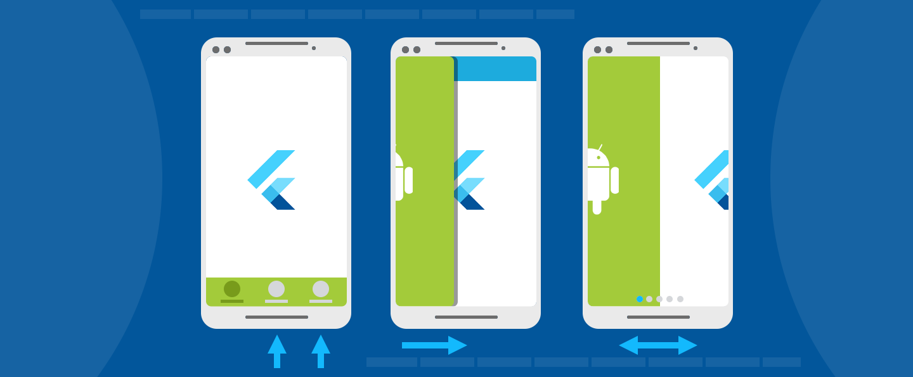

Add a Flutter Fragment to an Android app
- Add a FlutterFragment to an Activity with a new FlutterEngine
- Using a pre-warmed FlutterEngine
- Display a splash screen
- Run Flutter with a specified initial route
- Run Flutter from a specified entrypoint
- Control FlutterFragment’s render mode
- Display a FlutterFragment with transparency
- The relationship between FlutterFragment and its Activity

This guide describes how to add a Flutter Fragment to an existing
Android app. In Android, a Fragment represents a modular
piece of a larger UI. A Fragment might be used to present
a sliding drawer, tabbed content, a page in a ViewPager,
or it might simply represent a normal screen in a
single-Activity app. Flutter provides a FlutterFragment
so that developers can present a Flutter experience any place
that they can use a regular Fragment.
If an Activity is equally applicable for your application needs,
consider using a FlutterActivity instead of a
FlutterFragment, which is quicker and easier to use.
FlutterFragment allows developers to control the following
details of the Flutter experience within the Fragment:
- Initial Flutter route
- Dart entrypoint to execute
- Opaque vs translucent background
- Whether
FlutterFragmentshould control its surroundingActivity - Whether a new
FlutterEngineor a cachedFlutterEngineshould be used
FlutterFragment also comes with a number of calls that
must be forwarded from its surrounding Activity.
These calls allow Flutter to react appropriately to OS events.
All varieties of FlutterFragment, and its requirements,
are described in this guide.
Add a FlutterFragment to an Activity with a new FlutterEngine
The first thing to do to use a FlutterFragment is to add it to a host
Activity.
To add a FlutterFragment to a host Activity, instantiate and
attach an instance of FlutterFragment in onCreate() within the
Activity, or at another time that works for your app:
public class MyActivity extends FragmentActivity {
// Define a tag String to represent the FlutterFragment within this
// Activity's FragmentManager. This value can be whatever you'd like.
private static final String TAG_FLUTTER_FRAGMENT = "flutter_fragment";
// Declare a local variable to reference the FlutterFragment so that you
// can forward calls to it later.
private FlutterFragment flutterFragment;
@Override
protected void onCreate(Bundle savedInstanceState) {
super.onCreate(savedInstanceState);
// Inflate a layout that has a container for your FlutterFragment.
// For this example, assume that a FrameLayout exists with an ID of
// R.id.fragment_container.
setContentView(R.layout.my_activity_layout);
// Get a reference to the Activity's FragmentManager to add a new
// FlutterFragment, or find an existing one.
FragmentManager fragmentManager = getSupportFragmentManager();
// Attempt to find an existing FlutterFragment,
// in case this is not the first time that onCreate() was run.
flutterFragment = (FlutterFragment) fragmentManager
.findFragmentByTag(TAG_FLUTTER_FRAGMENT);
// Create and attach a FlutterFragment if one does not exist.
if (flutterFragment == null) {
flutterFragment = FlutterFragment.createDefault();
fragmentManager
.beginTransaction()
.add(
R.id.fragment_container,
flutterFragment,
TAG_FLUTTER_FRAGMENT
)
.commit();
}
}
}class MyActivity : FragmentActivity() {
companion object {
// Define a tag String to represent the FlutterFragment within this
// Activity's FragmentManager. This value can be whatever you'd like.
private const val TAG_FLUTTER_FRAGMENT = "flutter_fragment"
}
// Declare a local variable to reference the FlutterFragment so that you
// can forward calls to it later.
private var flutterFragment: FlutterFragment? = null
override fun onCreate(savedInstanceState: Bundle?) {
super.onCreate(savedInstanceState)
// Inflate a layout that has a container for your FlutterFragment. For
// this example, assume that a FrameLayout exists with an ID of
// R.id.fragment_container.
setContentView(R.layout.my_activity_layout)
// Get a reference to the Activity's FragmentManager to add a new
// FlutterFragment, or find an existing one.
val fragmentManager: FragmentManager = supportFragmentManager
// Attempt to find an existing FlutterFragment, in case this is not the
// first time that onCreate() was run.
flutterFragment = fragmentManager
.findFragmentByTag(TAG_FLUTTER_FRAGMENT) as FlutterFragment?
// Create and attach a FlutterFragment if one does not exist.
if (flutterFragment == null) {
var newFlutterFragment = FlutterFragment.createDefault()
flutterFragment = newFlutterFragment
fragmentManager
.beginTransaction()
.add(
R.id.fragment_container,
newFlutterFragment,
TAG_FLUTTER_FRAGMENT
)
.commit()
}
}
}The previous code is sufficient to render a Flutter UI
that begins with a call to your main() Dart entrypoint,
an initial Flutter route of /, and a new FlutterEngine.
However, this code is not sufficient to achieve all expected
Flutter behavior. Flutter depends on various OS signals that
must be forwarded from your host Activity to FlutterFragment.
These calls are shown in the following example:
public class MyActivity extends FragmentActivity {
@Override
public void onPostResume() {
super.onPostResume();
flutterFragment.onPostResume();
}
@Override
protected void onNewIntent(@NonNull Intent intent) {
flutterFragment.onNewIntent(intent);
}
@Override
public void onBackPressed() {
flutterFragment.onBackPressed();
}
@Override
public void onRequestPermissionsResult(
int requestCode,
@NonNull String[] permissions,
@NonNull int[] grantResults
) {
flutterFragment.onRequestPermissionsResult(
requestCode,
permissions,
grantResults
);
}
@Override
public void onActivityResult(
int requestCode,
int resultCode,
@Nullable Intent data
) {
super.onActivityResult(requestCode, resultCode, data);
flutterFragment.onActivityResult(
requestCode,
resultCode,
data
);
}
@Override
public void onUserLeaveHint() {
flutterFragment.onUserLeaveHint();
}
@Override
public void onTrimMemory(int level) {
super.onTrimMemory(level);
flutterFragment.onTrimMemory(level);
}
}class MyActivity : FragmentActivity() {
override fun onPostResume() {
super.onPostResume()
flutterFragment!!.onPostResume()
}
override fun onNewIntent(@NonNull intent: Intent) {
flutterFragment!!.onNewIntent(intent)
}
override fun onBackPressed() {
flutterFragment!!.onBackPressed()
}
override fun onRequestPermissionsResult(
requestCode: Int,
permissions: Array<String?>,
grantResults: IntArray
) {
flutterFragment!!.onRequestPermissionsResult(
requestCode,
permissions,
grantResults
)
}
override fun onActivityResult(
requestCode: Int,
resultCode: Int,
data: Intent?
) {
super.onActivityResult(requestCode, resultCode, data)
flutterFragment!!.onActivityResult(
requestCode,
resultCode,
data
)
}
override fun onUserLeaveHint() {
flutterFragment!!.onUserLeaveHint()
}
override fun onTrimMemory(level: Int) {
super.onTrimMemory(level)
flutterFragment!!.onTrimMemory(level)
}
}With the OS signals forwarded to Flutter,
your FlutterFragment works as expected.
You have now added a FlutterFragment to your existing Android app.
The simplest integration path uses a new FlutterEngine,
which comes with a non-trivial initialization time,
leading to a blank UI until Flutter is
initialized and rendered the first time.
Most of this time overhead can be avoided by using
a cached, pre-warmed FlutterEngine, which is discussed next.
Using a pre-warmed FlutterEngine
By default, a FlutterFragment creates its own instance
of a FlutterEngine, which requires non-trivial warm-up time.
This means your user sees a blank Fragment for a brief moment.
You can mitigate most of this warm-up time by
using an existing, pre-warmed instance of FlutterEngine.
To use a pre-warmed FlutterEngine in a FlutterFragment,
instantiate a FlutterFragment with the withCachedEngine()
factory method.
// Somewhere in your app, before your FlutterFragment is needed,
// like in the Application class ...
// Instantiate a FlutterEngine.
FlutterEngine flutterEngine = new FlutterEngine(context);
// Start executing Dart code in the FlutterEngine.
flutterEngine.getDartExecutor().executeDartEntrypoint(
DartEntrypoint.createDefault()
);
// Cache the pre-warmed FlutterEngine to be used later by FlutterFragment.
FlutterEngineCache
.getInstance()
.put("my_engine_id", flutterEngine);FlutterFragment.withCachedEngine("my_engine_id").build();// Somewhere in your app, before your FlutterFragment is needed,
// like in the Application class ...
// Instantiate a FlutterEngine.
val flutterEngine = FlutterEngine(context)
// Start executing Dart code in the FlutterEngine.
flutterEngine.getDartExecutor().executeDartEntrypoint(
DartEntrypoint.createDefault()
)
// Cache the pre-warmed FlutterEngine to be used later by FlutterFragment.
FlutterEngineCache
.getInstance()
.put("my_engine_id", flutterEngine)FlutterFragment.withCachedEngine("my_engine_id").build()FlutterFragment internally knows about FlutterEngineCache
and retrieves the pre-warmed FlutterEngine based on the ID
given to withCachedEngine().
By providing a pre-warmed FlutterEngine,
as previously shown, your app renders the
first Flutter frame as quickly as possible.
Initial route with a cached engine
The concept of an initial route is available when configuring a
FlutterActivity or a FlutterFragment with a new FlutterEngine.
However, FlutterActivity and FlutterFragment don’t offer the
concept of an initial route when using a cached engine.
This is because a cached engine is expected to already be
running Dart code, which means it’s too late to configure the
initial route.
Developers that would like their cached engine to begin
with a custom initial route can configure their cached
FlutterEngine to use a custom initial route just before
executing the Dart entrypoint. The following example
demonstrates the use of an initial route with a cached engine:
public class MyApplication extends Application {
@Override
public void onCreate() {
super.onCreate();
// Instantiate a FlutterEngine.
flutterEngine = new FlutterEngine(this);
// Configure an initial route.
flutterEngine.getNavigationChannel().setInitialRoute("your/route/here");
// Start executing Dart code to pre-warm the FlutterEngine.
flutterEngine.getDartExecutor().executeDartEntrypoint(
DartEntrypoint.createDefault()
);
// Cache the FlutterEngine to be used by FlutterActivity or FlutterFragment.
FlutterEngineCache
.getInstance()
.put("my_engine_id", flutterEngine);
}
}class MyApplication : Application() {
lateinit var flutterEngine : FlutterEngine
override fun onCreate() {
super.onCreate()
// Instantiate a FlutterEngine.
flutterEngine = FlutterEngine(this)
// Configure an initial route.
flutterEngine.navigationChannel.setInitialRoute("your/route/here");
// Start executing Dart code to pre-warm the FlutterEngine.
flutterEngine.dartExecutor.executeDartEntrypoint(
DartExecutor.DartEntrypoint.createDefault()
)
// Cache the FlutterEngine to be used by FlutterActivity or FlutterFragment.
FlutterEngineCache
.getInstance()
.put("my_engine_id", flutterEngine)
}
}By setting the initial route of the navigation channel, the associated
FlutterEngine displays the desired route upon initial execution of the
runApp() Dart function.
Changing the initial route property of the navigation channel
after the initial execution of runApp() has no effect.
Developers who would like to use the same FlutterEngine
between different Activitys and Fragments and switch
the route between those displays need to set up a method channel and
explicitly instruct their Dart code to change Navigator routes.
Display a splash screen
The initial display of Flutter content requires some wait time,
even if a pre-warmed FlutterEngine is used.
To help improve the user experience around
this brief waiting period, Flutter supports the
display of a splash screen (also known as “launch screen”) until Flutter
renders its first frame. For instructions about how to show a launch
screen, see the splash screen guide.
Run Flutter with a specified initial route
An Android app might contain many independent Flutter experiences,
running in different FlutterFragments, with different
FlutterEngines. In these scenarios,
it’s common for each Flutter experience to begin with different
initial routes (routes other than /).
To facilitate this, FlutterFragment’s Builder
allows you to specify a desired initial route, as shown:
// With a new FlutterEngine.
FlutterFragment flutterFragment = FlutterFragment.withNewEngine()
.initialRoute("myInitialRoute/")
.build();// With a new FlutterEngine.
val flutterFragment = FlutterFragment.withNewEngine()
.initialRoute("myInitialRoute/")
.build()Run Flutter from a specified entrypoint
Similar to varying initial routes, different
FlutterFragments might want to execute different
Dart entrypoints. In a typical Flutter app, there is only one
Dart entrypoint: main(), but you can define other entrypoints.
FlutterFragment supports specification of the desired
Dart entrypoint to execute for the given Flutter experience.
To specify an entrypoint, build FlutterFragment, as shown:
FlutterFragment flutterFragment = FlutterFragment.withNewEngine()
.dartEntrypoint("mySpecialEntrypoint")
.build();val flutterFragment = FlutterFragment.withNewEngine()
.dartEntrypoint("mySpecialEntrypoint")
.build()The FlutterFragment configuration results in the execution
of a Dart entrypoint called mySpecialEntrypoint().
Notice that the parentheses () are
not included in the dartEntrypoint String name.
Control FlutterFragment’s render mode
FlutterFragment can either use a SurfaceView to render its
Flutter content, or it can use a TextureView.
The default is SurfaceView, which is significantly
better for performance than TextureView. However, SurfaceView
can’t be interleaved in the middle of an Android View hierarchy.
A SurfaceView must either be the bottommost View in the hierarchy,
or the topmost View in the hierarchy.
Additionally, on Android versions before Android N,
SurfaceViews can’t be animated because their layout and rendering
aren’t synchronized with the rest of the View hierarchy.
If either of these use cases are requirements for your app,
then you need to use TextureView instead of SurfaceView.
Select a TextureView by building a FlutterFragment with a
texture RenderMode:
// With a new FlutterEngine.
FlutterFragment flutterFragment = FlutterFragment.withNewEngine()
.renderMode(FlutterView.RenderMode.texture)
.build();
// With a cached FlutterEngine.
FlutterFragment flutterFragment = FlutterFragment.withCachedEngine("my_engine_id")
.renderMode(FlutterView.RenderMode.texture)
.build();// With a new FlutterEngine.
val flutterFragment = FlutterFragment.withNewEngine()
.renderMode(FlutterView.RenderMode.texture)
.build()
// With a cached FlutterEngine.
val flutterFragment = FlutterFragment.withCachedEngine("my_engine_id")
.renderMode(FlutterView.RenderMode.texture)
.build()Using the configuration shown, the resulting FlutterFragment
renders its UI to a TextureView.
Display a FlutterFragment with transparency
By default, FlutterFragment renders with an opaque background,
using a SurfaceView. (See “Control FlutterFragment’s render
mode.”) That background is black for any pixels that aren’t
painted by Flutter. Rendering with an opaque background is
the preferred rendering mode for performance reasons.
Flutter rendering with transparency on Android negatively
affects performance. However, there are many designs that
require transparent pixels in the Flutter experience that
show through to the underlying Android UI. For this reason,
Flutter supports translucency in a FlutterFragment.
To enable transparency for a FlutterFragment,
build it with the following configuration:
// Using a new FlutterEngine.
FlutterFragment flutterFragment = FlutterFragment.withNewEngine()
.transparencyMode(FlutterView.TransparencyMode.transparent)
.build();
// Using a cached FlutterEngine.
FlutterFragment flutterFragment = FlutterFragment.withCachedEngine("my_engine_id")
.transparencyMode(FlutterView.TransparencyMode.transparent)
.build();// Using a new FlutterEngine.
val flutterFragment = FlutterFragment.withNewEngine()
.transparencyMode(FlutterView.TransparencyMode.transparent)
.build()
// Using a cached FlutterEngine.
val flutterFragment = FlutterFragment.withCachedEngine("my_engine_id")
.transparencyMode(FlutterView.TransparencyMode.transparent)
.build()
The relationship between FlutterFragment and its Activity
Some apps choose to use Fragments as entire Android screens.
In these apps, it would be reasonable for a Fragment to
control system chrome like Android’s status bar,
navigation bar, and orientation.
In other apps, Fragments are used to represent only
a portion of a UI. A FlutterFragment might be used to
implement the inside of a drawer, a video player,
or a single card. In these situations, it would be
inappropriate for the FlutterFragment to affect
Android’s system chrome because there are other UI
pieces within the same Window.
FlutterFragment comes with a concept that helps
differentiate between the case when a FlutterFragment
should be able to control its host Activity, and the
cases when a FlutterFragment should only affect its
own behavior. To prevent a FlutterFragment from
exposing its Activity to Flutter plugins, and to
prevent Flutter from controlling the Activity’s system UI,
use the shouldAttachEngineToActivity() method in
FlutterFragment’s Builder, as shown:
// Using a new FlutterEngine.
FlutterFragment flutterFragment = FlutterFragment.withNewEngine()
.shouldAttachEngineToActivity(false)
.build();
// Using a cached FlutterEngine.
FlutterFragment flutterFragment = FlutterFragment.withCachedEngine("my_engine_id")
.shouldAttachEngineToActivity(false)
.build();// Using a new FlutterEngine.
val flutterFragment = FlutterFragment.withNewEngine()
.shouldAttachEngineToActivity(false)
.build()
// Using a cached FlutterEngine.
val flutterFragment = FlutterFragment.withCachedEngine("my_engine_id")
.shouldAttachEngineToActivity(false)
.build()Passing false to the shouldAttachEngineToActivity()
Builder method prevents Flutter from interacting with
the surrounding Activity. The default value is true,
which allows Flutter and Flutter plugins to interact with the
surrounding Activity.